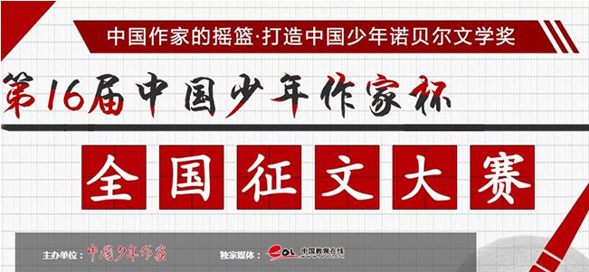

第十八届“中国少年作家杯”全国征文大赛由中国少年作家班、中国小说学会、北京守望文化艺术交流中心、漓江出版社、中国少年作家学会等单位联合举办，中国教育在线作为独家媒体，即日起开始征稿。大赛已成功举办十七届，以严格正统的赛风和认真负责的信誉取得了良好的社会反响，中央电视台、北京电视台、人民日报、新浪网、文汇报、新民晚报等多家媒体报道过相关情况。一百多名获奖作者分别被推荐到北京大学、复旦大学、上海戏剧学院、中国传媒大学等高校深造，每届大赛颁奖大会均在人民大会堂隆重举行，各届获奖文集由作家出版社、漓江出版社同步出版全国发行。
“中国少年作家杯”活动宗旨：培养中国少年作家队伍，提倡以自己的观察和理解完成真情自由的写作
参赛类别：
分为作者组别5组，作品类别3类。
作者组别：A组（小学一二年级学生）
B组（小学三四年级学生）
C组（小学五六年级学生）
D组（初中生）
E组（高中生、高职生及其他）
作品类别：
文学类：体裁、题材不限的各类文学作品；
作文类：符合语文课堂或考场作文要求的高、中、小学生作文；
个人作品集类：已公开出版或未出版（不得少于8万字）的个人文学作品集。
参赛要求：
1.凡18岁以下在校学生均可参赛。2.每位参赛作者限选择一组参赛；只能选送一篇（首）作品，重复投稿者稿件无效，取消参赛资格。3.稿件第一页需填写参赛作者资料，注明详细通联地址和联系方式等。（参赛作者资料页可到中国少年作家班官方网站下载）4.来稿不退，请自留底稿。5.参赛截稿日期为2017年5月8日，之后寄到的稿件将按第十九届参赛稿处理。